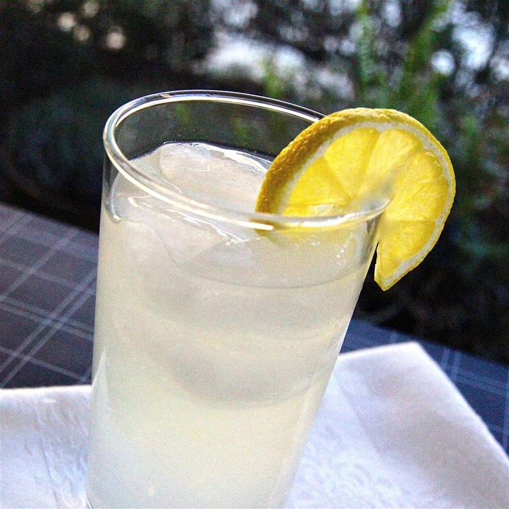

Good Enough For A Hoax
Ingrediants
- 2 oz London dry gin
- 1 oz lemon juice, freshly squeezed
- .5 oz simple syrup
- Club soda, to top
- Garnish: lemon wheel
- Garnish: maraschino cherry
Directions
- Add the gin, lemon juice and simple syrup to a Collins glass.
- Fill with ice, top with club soda and stir.
- Garnish with a lemon wheel and maraschino cherry (optional).